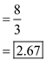
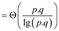
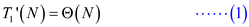

The dag for computing P-SQUARE-MATRIX-MULTIPLY on matrices
Work is defined as total time needed to execute an entire multithreaded computation on one processor.
Span is defined as the longest time to needed to execute the strands along any path in the direct acyclic graph (DAG).
Suppose the work is the running time on a single processor.
Consider it as .
.
Now suppose we have an unlimited number of processors then we
can donate the span by .
.
 and
that is
and
that is
 gives the
parallelism of the multithreaded computation.
gives the
parallelism of the multithreaded computation.DAG Representation:
The two numbers in each of the rectangle gives the subscript of the matix element that is currently being accessed in the present invocation. The black circle in each of the rectangle shows whether the element is the part of the base case or the parallel call.The white circles show the strands where the result of the calculation is stored after the control returns from the parallel calls.
Analyzing the above diagram, it can be observed that each of the base case is being passed through eight different stages of calculation. It can be seen by counting the number of arrows that a base case is being driven through. This makes the total number of strands 8.
There are three different levels in which this entire calculation for a strand is taking place. The fourth level is the final answer itself. The calculations are being done upto the third level. Now move to the next stage.
Since there are total 8 strands.
Therefore,
Total work is  .
.
Since the length of the largest strand is 3
Therefore, its span is  .
.
Parallelism=

Pseudo code for a multithreaded algorithm of matrix multiplication
Spawn is a subroutine that executes or run at the same time as that of parent. So by spawning, both parent and child work simultaneously. The main motive behind for evolving the concept of spawning is to achieve parallelism, which results in increase the overall performance of computer.
Work is defined as total time required for completing the entire multithreaded computation on a single processor. Suppose in the below example each circle represents the strands which takes unit time. Therefore, total work done is 25 units.

Span is defined as the maximum time required for completing the strands along any path in the directed acyclic graph (DAG). It is an expensive path which contains maximum number of strands. The path highlighted in the above figure is known as span.
Work is the running time of a computation on a single processor.
Consider it as.
Now suppose there areunlimited numbers of processors. Then the
span is denoted by
and,
that is gives the
parallelism of the multithreaded computation.Pseudo code:
The procedure P-MATRIX-MULTIPLY will get the multiplication of two matrices. X and Y are the matrices to be multiplied. Create a new matrix to hold the resultant of multiplication. Run two parallel loops to go through the matrix elements and call the procedure MATRIX_SUB to get the multiplication.
P-MATRIX-MULTIPLY
Let  be a new
be a new
 matrix
matrix
parallel for  to
to 
parallel for to
MATRIX_SUB
return
Use the below procedure to get the multiplication. X and Y are the matrices to be multiplied. The row and column subscript i and j would represent the element that is currently being accessed. m and m’ would be used to partition the matrix based on the upper and the lower bound of matrix dimension for parallel multiplication.
MATRIX_SUB
if
return
else
spawn MATRIX_SUB
MATRIX_SUB
sync
re turn  +
+
The multiplication is done typically as below:
Let A and B be two matrices as below:
Now perform the partition, so that the sub matrices can be given to separate threads for parallel computing.
Now, get the separate multiplication of the sub matrices:
Now, perform left shift on the lower part of the left sub part and an up shift in the right most part of the right sub part. This would be done to perform the recursive multiplication.
Now, perform the multiplication as below. Each sub matrix multiplication would be performed parallel to other multiplications.
Perform the left shift on the entire left part and the up shift on the entire right sub part. This would be done for the second recursive call.
Now, perform the multiplication again. All the below multiplications would be done in parallel.

The final answer would be the integration of all the sub matrices.
Analyzing the above modified algorithm:
Here three methods which are work, span and parallelism are used for analyzing the algorithm which is as follow:
Work:
Work  of the
P-MARIX-MULTIPLY can be
calculated by computing the execution time of its serialization. In
order to calculate the execution time of its serialization, replace
parallel for loop by ordinary for loop.
of the
P-MARIX-MULTIPLY can be
calculated by computing the execution time of its serialization. In
order to calculate the execution time of its serialization, replace
parallel for loop by ordinary for loop.
Considerbe the work of the MATRIX_SUB (nested for loop).
Therefore … … (1)
MATRIX_SUB can be given by the recurrence (consider if-else and mid-point division)
… … (2)
By applying master theorem (In the analysis of the algorithm, master theorem gives the solution in asymptotic term for the recurrence relation),
Generic form of master theorem is:
Where, is the sum of cost of dividing the problem into sub-problems and the cost of combining these sub-problems outside the recurrence call.
Above recurrence relation is in form of
Here, according to the master theorem,

Then the solution of the recurrence relation become

Therefore from (1) and (2)
 …… (3)
…… (3)
Hence total work of P-MATRIX-MULTIPLY algorithm is.
Span:
Span can be calculated by below recurrence-
In P-MATRIX-MULTIPLY() function, each iteration of second
parallel for loop call MATRIX_SUB() function to multiply
square matrix. Further each time the MATRIX_SUB() function half the
space between 1 and nby calling itself again and again and
does the constant time work. Therefore the span becomes .
.
That is,

Hence, Span of P-MATRIX-MULTIPLY algorithm is.
Parallelism:
Parallelism is the ratio of work by span that is ratio of
by.
Therefore,
Parallelism=
=
Hence, Parallelism of P-MATRIX-MULTIPLY algorithm is.
Pseudo code for an efficient multithreaded algorithm of two matrix multiplication
Spawn is a subroutine that executes or run at the same time as that of parent. So by spawning, both parent and child work simultaneously. The main motive behind for evolving the concept of spawning is to achieve parallelism, which results in increase the overall performance of computer.
Work is defined as total time required for completing the entire multithreaded computation on a single processor. Suppose in the below example each circle represents the strands which takes unit time. Therefore, total work done is 25 units.
Span is defined as the maximum time required for completing the strands along any path in the directed acyclic graph (DAG). It is an expensive path which contains maximum number of strands. The path highlighted in the above figure is known as span.
Work is the running time of a computation on a single processor.
Consider it as.
Now suppose there areunlimited numbers of processors. Then the
span is denoted by
and,
that is gives the
parallelism of the multithreaded computation.A pseudo code for an efficient multithreaded algorithm that multiplies matrix by a matrix
The procedure P-MATRIX-MULTIPLY will get the multiplication of two matrices. X and Y are the matrices to be multiplied. Create a new matrix to hold the resultant of multiplication; run two parallel loops to go through the matrix elements and call the procedure MATRIX_SUB to get the multiplication.
P_MATRIX_MULTIPLY ( ,
, )
)
//Find number of rows in X matrix
//Find number of columns in X matrix
//Find number of columns in Y matrix
letis a new
matrix having  rows and
rows and
 columns.
columns.
//use parallel for loop to traverseprows of X matrix
parallel for to
//use parallel for loop to traverse r columns of Y matrix
parallel for to
//Call MATRIX_SUB() function to split matrix into small matrix and then
//multiply it.
MATRIX_SUB
return
Use the MATRIX_SUB () procedure defined below to get the multiplication. X and Y are the matrices to be multiplied. The row and column subscript i and j would represent the element that is currently being accessed. m and m’ would be used to partition the matrix based on the upper and the lower bound of matrix dimension for parallel multiplication.
MATRIX_SUB
//using if statement to check upper and lower bound are same or not.
if
//return multiplication to calling function
return
else
//divide thematrix
//Again call MATRIX_SUB() to calculate the first half.
spawn MATRIX_SUB
//Again call MATRIX_SUB() function calculate the last half
MATRIX_SUB
Sync
return +
The algorithm would work as below:
Let the two matrices to be multiplied be A and B.

The matrices would first be divided in the sub matrices for assigning them to the parallel processors. The sub matrices would as below:
Now, the sub matrices would be multiplied to get the desired result. The matrix that does not get a corresponding sub matrix for multiplication would be discarded.
Now, get the resultant by adding the result of above calculations.
Analyzing the above modified algorithm:
Here three methods which are work, span and parallelism are used for analyzing the algorithm which is as follow:
Work:
Work of the
above algorithm can be calculated by replacing the parallel for
loop with ordinary for loop.
Consider the work of MATRIX_SUB is.
(Nested for loops runs up-to prtimes)
Therefore … … (1)
Since input size of the procedure MATRIX_SUB is 
Because it is common in both the matrices
Therefore … … (2)
From (1) and (2)

Hence total work of modified P-MATRIX-MULTIPLY algorithm is.
Span:
In order to calculate the spanof the above algorithm, check the number of iteration each loop will have in it.
In general span of a parallel for loop, in which  th
iteration has span say is given
by,
th
iteration has span say is given
by,
Therefore span in this case will be-
Hence span of modified P-MATRIX-MULTIPLY algorithm is.
Parallelism:
Parallelism is the ratio of work by span that is ratio of
by
.
Therefore,
Parallelism=
=When p is equal to 1 then parallelism becomes
Parallelism
When q is equal to 1 then parallelism becomes
Parallelism
When r is equal to 1 then parallelism becomes
Parallelism
Thus, algorithm should be highly parallel even if any of p, q, and r is 1. As the value of p,q and r is increases then correspondingly parallelism also increases.
Now if p, q, and r are 1 then according to above algorithm,
Parallelism
Thus, algorithm should be highly parallel even if p, q, and r is 1.
Pseudo code for a multithreaded algorithm to get then transpose of matrix is as follows:
Algorithm:
The algorithm given below finds the transpose of a matrix
A of order . The
variables x and y indicates the row and column number
of the matrix that is currently being transposed.
. The
variables x and y indicates the row and column number
of the matrix that is currently being transposed.
This algorithm divides the matrix in two halves and makes a recursive call to the procedure to transpose the concerned matrix. The recursive call uses the divide-and-conquer technique.
P-MATRIX-TRANSPOSE
// Transpose the sub-matrix
starting at.
if 
return
else
//recursive call to the procedure for transposing the first half of matrix
spawn P-MATRIX-TRANSPOSE
//parallel call to the procedure for transposing the second half of matrix
spawn P-MATRIX-TRANSPOSE
//call to procedure for swapping the element
P-MATRIX-TRANSPOSE-SWAP
sync
Use the procedure below to swap the elements of matrix A
to perform the transpose operation. The element at row and
 column would
be swapped with the element at
column would
be swapped with the element at  row and the
row and the
 column.
column.
P-MATRIX-TRANSPOSE-SWAP
// Transpose the sub matrix starting at with the sub matrix
// starting at
if 
P-MATRIX-TRANSPOSE-SWAP
else if
//this will make
exchangewith
else
spawn P-MATRIX-TRANSPOSE-SWAP
spawn P-MATRIX-TRANSPOSE-SWAP
sync
Explanation:
This would be an in place algorithm. It takes the matrix as input and replace the original matrix with its transpose.
The algorithm divides the matrix into smaller sub matrices. They are processed separately to find the transpose. Once all the sub parts are processed, the results are combined to get the transpose of the entire matrix.
Work is defined as total time required for completing the entire multithreaded computation on a single processor.
Span is defined as the maximum time required for completing the strands along any path in the directed acyclic graph (DAG). It is an expensive path which contains maximum number of strands.
Analyzing the above modified algorithm:
Work is the running time of a computation on a single processor.
Consider it as.
Now suppose there are unlimited numbers of processors. Then the
span is denoted by
The ratio of
and,
that is gives the
parallelism of the multithreaded computation.
Calculate the work, span and parallelism for analyzing the efficiency of the algorithm.
Work:
Calculate the total running time of the matrix. Taking be number of
elements in the matrix.
be number of
elements in the matrix.
In this case
Work of P-MATRIX-TRANSPOSE-SWAP say can be calculated by calculating the running time of its serialization,
That is
Using mater theorem (In the analysis of the algorithm, master theorem gives the solution in asymptotic term for the recurrence relation),


Calculate work of P-MATRIX-TRANSPOSE say by calculating the running time of its serialization.
The matrix of order  will have
elements.
will have
elements.
From (1) and (3)
Hence total work of P-MATRIX-TRANSPOSE algorithm is.
Span:
Span of P-MATRIX-TRANSPOSE say will be
maximum of the span of one of these recursive calls plus of
P-MATRIX-TRANSPOSE-SWAP (from equation (3)) plus .
.
That is
Hence span of P-MATRIX-TRANSPOSE algorithm is.
Parallelism:
Parallelism is the ratio of work by span that is, ratio of
and .
Therefore,
Parallelism=
=
=
Hence, parallelism of P-MATRIX-TRANSPOSE algorithm is.
Pseudo code for an efficient multithreaded algorithm of the Floyd-Warshall algorithm
The Floyd-Warshall Algorithm is used to solve the all-pairs
shortest-paths for a given directed graph .It
considers the intermediate vertex of a simple path. This algorithm
uses dynamic programming approach.
.It
considers the intermediate vertex of a simple path. This algorithm
uses dynamic programming approach.
The shortest distance between any two vertices is calculated by:
Graph may have the negative weight edges but there should not be any negative-weight cycles.
Work is defined as total time required for completing the entire multithreaded computation on a single processor.
Span is defined as the maximum time required for completing the strands along any path in the directed acyclic graph (DAG). It is an expensive path which contains maximum number of strands.
Work is the execution time of a computation on a single
processor. Consider it as.
Now suppose there areunlimited numbers of processors. Then the
span is denoted by
and,
that is gives the
parallelism of the multithreaded computation.Multithreaded Implementation of the Floyd-Warshall algorithm:
Below given procedure will calculate the shortest path from all
vertices of a graph to all other vertices. All the respective
distances are stored in a matrix
W. Every row shows a vertex and the columns of that row show
the distances from that vertex to all other vertices.
Mt-FLOYD-WARSHALL (W)
parallel for to
parallel for to
//get the distance of the current node from all other nodes
for  to
to
parallel for to
parallel for to
//find the minimum of distances
return 
Suppose the shortest paths for the given graph have to be calculated.

The task of finding the shortest path would be distributed in the processes. Each process would find the possible path from any node to other.
So the matrices and respective updatesin the execution would be as below:
Now compute D matrix using given algorithm.
Initially the D matrix will be W matrix as shown below.
In the above matrix if there is any edge from vertices i to j then path will also exist between them and assign value of weight in (i, j)th position in the matrix.
Now for k=1, so, vertex “1” can be an intermediate node. Then the corresponding D1matrix will be as shown:

In the above matrix weight of d4,2 and d4,5 have been changed which are calculated by using the given formula:
Now for k=2, so, vertex “2” can be an intermediate node. Then the corresponding D2 matrix will be as shown:
In the above matrix, weight of d1,4, d3,4and d3,5 have been changed which are calculated by using the given formula:
Now for k=3, so, vertex “3” can be an intermediate node. Then the corresponding D3 matrix will be as shown:
In the above matrix weight of d4,2 has been changed which are calculated by using the given formula:
Now for k=4, so, vertex “4” can be an intermediate node. Then the corresponding D4 matrix will be as shown:
In the above matrix, weight of d2,1, d2,3, d2,5, d3,1, d3,5, d5,1, d5,2 and d5,3have been changed which are calculated by using the given formula:
Now for k=5, so, vertex “5” can be an intermediate node. Then the corresponding D5 matrix will be as shown:
In the above matrix weight of d1,2, d1,3 and d1,4 have been changed which are calculated by using the given formula:
Now, the shortest distances would be picked up and the final distance matrix would look like below:
Analyzing the above algorithm:
Here three methods which are work, span and parallelism are used for analyzing the algorithm which is as follow:
Work:
Work of the above Mt-FLOYD-WARSHALL (W) will be same as that ofthe execution time of its serialization. So in order to compute work, parallel for loop must be replaced with ordinary for loop.
Since for loop in above algorithm runs times so do
and , therefore
total running time will be
, therefore
total running time will be .
.
That is,
Hence total work of the above algorithm is.
Span:
Span of the doubly nested parallel for loop will be.Since it
runs under for loop for times
therefore total span will be .
.
That is
Hence span of the above algorithm is.Parallelism:
Parallelism is the ratio of work by span that is ratio of
by.
Therefore,
Parallelism=
=
=
Hence Parallelism of the above algorithm is.